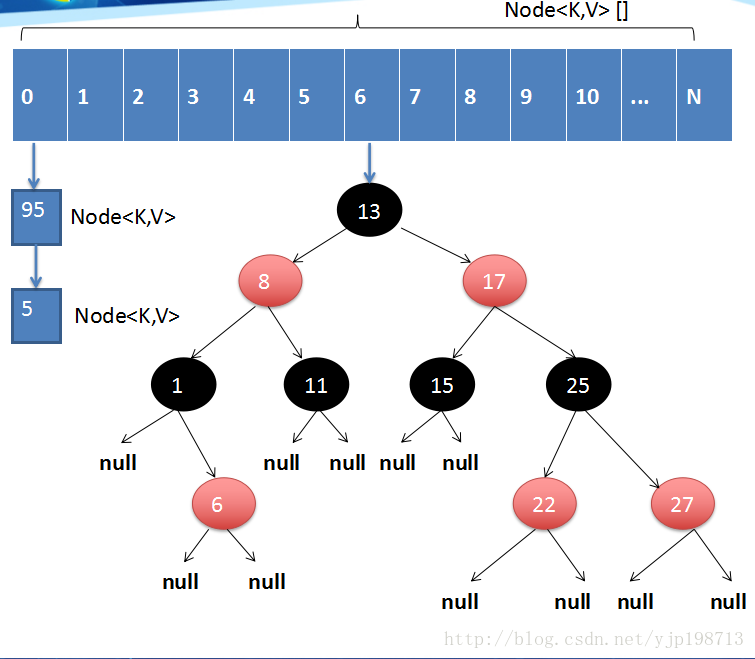
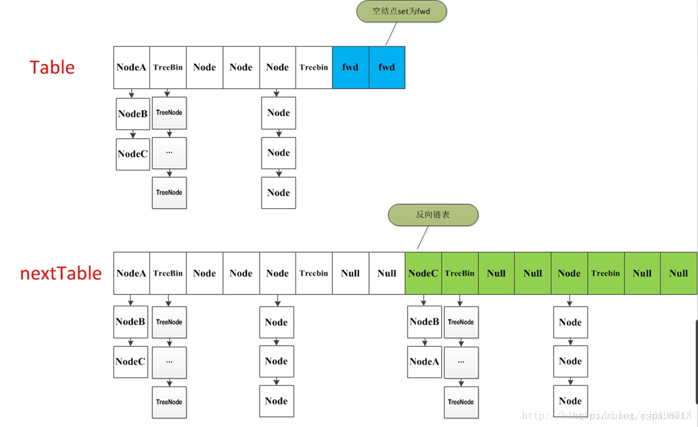

java7中使用分段锁来保证多线程之间数据的安全，那随着jdk的升级，在java8中ConcurrentHashMap进一步优化了。
java8的实现已经摒弃了Segment的概念，而是直接用Node数组+链表+红黑树的数据结构来实现，并发控制使用Synchronized和CAS来操作，整个看起来就像是优化过且线程安全的HashMap，虽然在java8中还能看到Segment的数据结构，但是已经简化了属性，只是为了兼容旧版本。
1// node数组最大容量：2^30=10737418242private static final int MAXIMUM_CAPACITY = 1 << 30;3// 默认初始值，必须是2的幕数4private static final int DEFAULT_CAPACITY = 16;5//数组可能最大值，需要与toArray（）相关方法关联6static final int MAX_ARRAY_SIZE = Integer.MAX_VALUE - 8;7//并发级别，遗留下来的，为兼容以前的版本8private static final int DEFAULT_CONCURRENCY_LEVEL = 16;9// 负载因子10private static final float LOAD_FACTOR = 0.75f;11// 链表转红黑树阀值,> 8 链表转换为红黑树12static final int TREEIFY_THRESHOLD = 8;13//树转链表阀值，小于等于6（tranfer时，lc、hc=0两个计数器分别++记录原bin、新binTreeNode数量，<=UNTREEIFY_THRESHOLD 则untreeify(lo)）14static final int UNTREEIFY_THRESHOLD = 6;15static final int MIN_TREEIFY_CAPACITY = 64;16private static final int MIN_TRANSFER_STRIDE = 16;17private static int RESIZE_STAMP_BITS = 16;18// 2^15-1，help resize的最大线程数19private static final int MAX_RESIZERS = (1 << (32 - RESIZE_STAMP_BITS)) - 1;20// 32-16=16，sizeCtl中记录size大小的偏移量21private static final int RESIZE_STAMP_SHIFT = 32 - RESIZE_STAMP_BITS;22// forwarding nodes的hash值23static final int MOVED = -1;24// 树根节点的hash值25static final int TREEBIN = -2;26// ReservationNode的hash值27static final int RESERVED = -3;28// 可用处理器数量29static final int NCPU = Runtime.getRuntime().availableProcessors();30//存放node的数组31transient volatile Node<K,V>[] table;32//控制标识符，用来控制table的初始化和扩容的操作，不同的值有不同的含义33 //当为负数时：-1代表正在初始化，-N代表有N-1个线程正在 进行扩容34 //当为0时：代表当时的table还没有被初始化35 //当为正数时：表示初始化或者下一次进行扩容的大小36private transient volatile int sizeCtl;
ConcurrentHashMap通过组合一个 Node<K, V>[] table数组+Node单向链表，来作为底层数据储存的结构。
Node是最核心的内部类，它包装了key-value键值对，所有插入ConcurrentHashMap的数据都包装在这里面。它与HashMap中的定义很相似，但是有一些差别它对value和next属性设置了volatile同步锁，它不允许调用setValue方法直接改变Node的value域，它增加了find方法辅助map.get()方法。
x1static class Node<K,V> implements Map.Entry<K,V> { 2 final int hash; 3 final K key; 4 volatile V val; // 带有同步锁的value 5 volatile Node<K,V> next;// 带有同步锁的next指针 6
7 Node(int hash, K key, V val, Node<K,V> next) { 8 this.hash = hash; 9 this.key = key; 10 this.val = val; 11 this.next = next; 12 } 13
14 public final K getKey() { return key; } 15 public final V getValue() { return val; } 16 public final int hashCode() { return key.hashCode() ^ val.hashCode(); } 17 public final String toString(){ return key + "=" + val; } 18 19 // 不允许直接改变value的值 20 public final V setValue(V value) { 21 throw new UnsupportedOperationException(); 22 } 23
24 public final boolean equals(Object o) { 25 Object k, v, u; Map.Entry<?,?> e; 26 return ((o instanceof Map.Entry) && 27 (k = (e = (Map.Entry<?,?>)o).getKey()) != null && 28 (v = e.getValue()) != null && 29 (k == key || k.equals(key)) && 30 (v == (u = val) || v.equals(u))); 31 } 32
33 /** 34 * Virtualized support for map.get(); overridden in subclasses. 35 */ 36 Node<K,V> find(int h, Object k) { 37 Node<K,V> e = this; 38 if (k != null) { 39 do { 40 K ek; 41 if (e.hash == h && 42 ((ek = e.key) == k || (ek != null && k.equals(ek)))) 43 return e; 44 } while ((e = e.next) != null); 45 } 46 return null; 47 } 48}注：一个链表，但是只允许对数据进行查找，不允许进行修改
TreeNode继承与Node，但是数据结构换成了二叉树结构，它是红黑树的数据的存储结构，用于红黑树中存储数据，当链表的节点数大于8时会转换成红黑树的结构，他就是通过TreeNode作为存储结构代替Node来转换成黑红树源代码如下：
481static final class TreeNode<K,V> extends Node<K,V> {2 //树形结构的属性定义3 TreeNode<K,V> parent; // red-black tree links4 TreeNode<K,V> left;5 TreeNode<K,V> right;6 TreeNode<K,V> prev; // needed to unlink next upon deletion7 boolean red; //标志红黑树的红节点8 9 TreeNode(int hash, K key, V val, Node<K,V> next,10 TreeNode<K,V> parent) {11 super(hash, key, val, next);12 this.parent = parent;13 }14 15 Node<K,V> find(int h, Object k) {16 return findTreeNode(h, k, null);17 }18 19 // 根据key查找 从根节点开始找出相应的TreeNode，20 final TreeNode<K,V> findTreeNode(int h, Object k, Class<?> kc) {21 if (k != null) {22 TreeNode<K,V> p = this;23 do {24 int ph, dir; K pk; TreeNode<K,V> q;25 TreeNode<K,V> pl = p.left, pr = p.right;26 if ((ph = p.hash) > h)27 p = pl;28 else if (ph < h)29 p = pr;30 else if ((pk = p.key) == k || (pk != null && k.equals(pk)))31 return p;32 else if (pl == null)33 p = pr;34 else if (pr == null)35 p = pl;36 else if ((kc != null ||37 (kc = comparableClassFor(k)) != null) &&38 (dir = compareComparables(kc, k, pk)) != 0)39 p = (dir < 0) ? pl : pr;40 else if ((q = pr.findTreeNode(h, k, kc)) != null)41 return q;42 else43 p = pl;44 } while (p != null);45 }46 return null;47 }48}这个类并不负责包装用户的key、value信息，用来包装TreeNode节点。它代替了TreeNode的根节点，也就是说在实际的ConcurrentHashMap“数组”中，存放的是TreeBin对象，而不是TreeNode对象，这是与HashMap的区别。另外这个类还带有了读写锁。
从它的构造方法可以看到在构造TreeBin节点时，仅仅指定了它的hash值为TREEBIN常量，这也就是个标识位。同时也看到我们熟悉的红黑树构造方法。
621static final class TreeBin<K,V> extends Node<K,V> {2 //指向TreeNode列表和根节点3 TreeNode<K,V> root;4 5 volatile TreeNode<K,V> first;6 volatile Thread waiter;7 volatile int lockState;8 9 // 读写锁状态10 static final int WRITER = 1; // 获取写锁的状态11 static final int WAITER = 2; // 等待写锁的状态12 static final int READER = 4; // 增加数据时读锁的状态13 14 /**15 * 初始化红黑树16 */17 TreeBin(TreeNode<K,V> b) {18 super(TREEBIN, null, null, null);19 20 this.first = b;21 TreeNode<K,V> r = null;22 for (TreeNode<K,V> x = b, next; x != null; x = next) {23 next = (TreeNode<K,V>)x.next;24 x.left = x.right = null;25 if (r == null) {26 x.parent = null;27 x.red = false;28 r = x;29 }30 else {31 K k = x.key;32 int h = x.hash;33 Class<?> kc = null;34 for (TreeNode<K,V> p = r;;) {35 int dir, ph;36 K pk = p.key;37 if ((ph = p.hash) > h)38 dir = -1;39 else if (ph < h)40 dir = 1;41 else if ((kc == null &&42 (kc = comparableClassFor(k)) == null) ||43 (dir = compareComparables(kc, k, pk)) == 0)44 dir = tieBreakOrder(k, pk);45 TreeNode<K,V> xp = p;46 if ((p = (dir <= 0) ? p.left : p.right) == null) {47 x.parent = xp;48 if (dir <= 0)49 xp.left = x;50 else51 xp.right = x;52 r = balanceInsertion(r, x);53 break;54 }55 }56 }57 }58 this.root = r;59 assert checkInvariants(root);60 }61 ......62}一个用于连接两个table的节点类。它包含一个nextTable指针，用于指向下一张表。而且这个节点的key value next指针全部为null，它的hash值为-1. 这里面定义的find的方法是从nextTable里进行查询节点，而不是以自身为头节点进行查找。
381/** 2 * A node inserted at head of bins during transfer operations. 3 */ 4static final class ForwardingNode<K,V> extends Node<K,V> { 5 final Node<K,V>[] nextTable; 6 ForwardingNode(Node<K,V>[] tab) { 7 super(MOVED, null, null, null); 8 this.nextTable = tab; 9 } 10
11 // 从下一个table中查找12 Node<K,V> find(int h, Object k) { 13 // loop to avoid arbitrarily deep recursion on forwarding nodes 14 outer: for (Node<K,V>[] tab = nextTable;;) { 15 Node<K,V> e; int n; 16 17 if (k == null || tab == null || (n = tab.length) == 0 || 18 (e = tabAt(tab, (n - 1) & h)) == null) 19 return null; 20 for (;;) { 21 int eh; K ek; 22 if ((eh = e.hash) == h && 23 ((ek = e.key) == k || (ek != null && k.equals(ek)))) 24 return e; 25 if (eh < 0) { 26 if (e instanceof ForwardingNode) { 27 tab = ((ForwardingNode<K,V>)e).nextTable; 28 continue outer; 29 } 30 else 31 return e.find(h, k); 32 } 33 if ((e = e.next) == null) 34 return null; 35 } 36 } 37 } 38} 在ConcurrentHashMap中，随处可以看到Unsafe, 大量使用了Unsafe.compareAndSwapXXX的方法，这个方法是利用一个CAS算法实现无锁化的修改值的操作，他可以大大降低锁代理的性能消耗。这个算法的基本思想就是不断地去比较当前内存中的变量值与你指定的一个变量值是否相等，如果相等，则接受你指定的修改的值，否则拒绝你的操作。因为当前线程中的值已经不是最新的值，你的修改很可能会覆盖掉其他线程修改的结果。这一点与乐观锁，SVN的思想是比较类似的（SVN代表的是Subversion，它是一种开放源代码的版本控制系统）。
unsafe代码块控制了一些属性的修改工作，比如最常用的SIZECTL。 在这一版本的concurrentHashMap中，大量应用来的CAS方法进行变量、属性的修改工作。 利用CAS进行无锁操作，可以大大提高性能。
351private static final sun.misc.Unsafe U; 2private static final long SIZECTL; 3private static final long TRANSFERINDEX; 4private static final long BASECOUNT; 5private static final long CELLSBUSY; 6private static final long CELLVALUE; 7private static final long ABASE; 8private static final int ASHIFT; 9
10static { 11 try {12 U = sun.misc.Unsafe.getUnsafe(); 13 Class<?> k = ConcurrentHashMap.class; 14 15 SIZECTL = U.objectFieldOffset 16 (k.getDeclaredField("sizeCtl")); 17 TRANSFERINDEX = U.objectFieldOffset 18 (k.getDeclaredField("transferIndex")); 19 BASECOUNT = U.objectFieldOffset 20 (k.getDeclaredField("baseCount")); 21 CELLSBUSY = U.objectFieldOffset 22 (k.getDeclaredField("cellsBusy")); 23 Class<?> ck = CounterCell.class; 24 CELLVALUE = U.objectFieldOffset 25 (ck.getDeclaredField("value")); 26 Class<?> ak = Node[].class; 27 ABASE = U.arrayBaseOffset(ak); 28 int scale = U.arrayIndexScale(ak); 29 if ((scale & (scale - 1)) != 0) 30 throw new Error("data type scale not a power of two"); 31 ASHIFT = 31 - Integer.numberOfLeadingZeros(scale); 32 } catch (Exception e) { 33 throw new Error(e); 34 } 35}ConcurrentHashMap定义了三个原子操作，用于对指定位置的节点进行操作。正是这些原子操作保证了ConcurrentHashMap的线程安全。
181("unchecked") 2//获得在i位置上的Node节点 3static final <K,V> Node<K,V> tabAt(Node<K,V>[] tab, int i) { 4 return (Node<K,V>)U.getObjectVolatile(tab, ((long)i << ASHIFT) + ABASE); 5} 6
7//利用CAS算法设置i位置上的Node节点。之所以能实现并发是因为他指定了原来这个节点的值是多少 8//在CAS算法中，"会比较内存中的值与你指定的这个值是否相等"，如果相等才接受你的修改，否则拒绝你的修改 9//因此当前线程中的值并不是最新的值，这种修改可能会覆盖掉其他线程的修改结果 有点类似于SVN 10static final <K,V> boolean casTabAt(Node<K,V>[] tab, int i, 11 Node<K,V> c, Node<K,V> v) { 12 return U.compareAndSwapObject(tab, ((long)i << ASHIFT) + ABASE, c, v); 13}14
15//利用volatile方法设置节点位置的值 16static final <K,V> void setTabAt(Node<K,V>[] tab, int i, Node<K,V> v) { 17 U.putObjectVolatile(tab, ((long)i << ASHIFT) + ABASE, v); 18}当ConcurrentHashMap容量不足的时候，需要对table进行扩容。这个方法的基本思想跟HashMap是很像的，但是由于它是支持并发扩容的，所以要复杂的多。原因是支持多线程进行扩容操作，而并没有加锁。我想这样做的目的不仅仅是为了满足concurrent的要求，而是希望利用并发处理去减少扩容带来的时间影响。因为在扩容的时候，总是会涉及到从一个“数组”到另一个“数组”拷贝的操作，如果这个操作能够并发进行，那真真是极好的了。
整个扩容操作分为两个部分：
构建一个nextTable（一个过渡的table表 只有在扩容的时候才会使用），它的容量是原来的两倍，这个操作是单线程完成的。这个单线程的保证是通过RESIZE_STAMP_SHIFT这个常量经过一次运算来保证的。
将原来table中的元素复制到nextTable中，这里允许多线程进行操作。
它的大体思想就是遍历、复制的过程。首先根据运算得到需要遍历的次数i，然后利用tabAt方法获得i位置的元素：
如果这个位置为空：就在原table中的i位置放入forwardNode节点，这个也是触发并发扩容的关键点；
如果这个位置是Node节点（fh>=0）并且是链表的头节点，就构造一个反序链表，把他们分别放在nextTable的i和i+n的位置上。
如果这个位置是TreeBin节点（fh<0）：也做一个反序处理，并且判断是否需要untreefi，把处理的结果分别放在nextTable的i和i+n的位置上。
遍历过所有的节点以后就完成了复制工作，这时让nextTable作为新的table，并且更新sizeCtl为新容量的0.75倍，完成扩容。
多线程遍历节点，处理了一个节点，就把对应点的值设置为forward，另一个线程看到forward，就向后遍历。这样交叉就完成了复制工作。而且还很好的解决了线程安全的问题。（很优秀的设计）
如果遍历到的节点是forward节点，就向后继续遍历，再加上给节点上锁的机制，就完成了多线程的控制。

源码：
1791// 一个过渡的table表 只有在扩容的时候才会使用 2private transient volatile Node<K,V>[] nextTable; 3
4// 扩容的方法5private final void transfer(Node<K,V>[] tab, Node<K,V>[] nextTab) { 6 int n = tab.length, stride; 7 8 if ((stride = (NCPU > 1) ? (n >>> 3) / NCPU : n) < MIN_TRANSFER_STRIDE) 9 stride = MIN_TRANSFER_STRIDE; // subdivide range 10 if (nextTab == null) { // initiating 11 try { 12 // 构造一个nextTable对象 它的容量是原来的两倍 13 ("unchecked") 14 Node<K,V>[] nt = (Node<K,V>[])new Node<?,?>[n << 1];15 nextTab = nt; 16 } catch (Throwable ex) { // try to cope with OOME 17 sizeCtl = Integer.MAX_VALUE; 18 return; 19 } 20 nextTable = nextTab; 21 transferIndex = n; 22 } 23 24 int nextn = nextTab.length; 25 // 构造一个连节点指针 用于标志位 26 ForwardingNode<K,V> fwd = new ForwardingNode<K,V>(nextTab);27 28 // 并发扩容的关键属性 如果等于true 说明这个节点已经处理过 29 boolean advance = true;30 // to ensure sweep before committing nextTab 31 boolean finishing = false; 32 33 // 循环处理34 for (int i = 0, bound = 0;;) { 35 Node<K,V> f; int fh; 36 37 // 这个while循环体的作用就是在控制i-- 通过i--可以依次遍历原hash表中的节点 38 while (advance) { 39 int nextIndex, nextBound; 40 // 判断是否完成41 if (--i >= bound || finishing) 42 advance = false; 43 // 已将遍历完成44 else if ((nextIndex = transferIndex) <= 0) { 45 i = -1; 46 advance = false; 47 } 48 // 判断是否处理过节点49 else if (U.compareAndSwapInt 50 (this, TRANSFERINDEX, nextIndex, 51 nextBound = (nextIndex > stride ? 52 nextIndex - stride : 0))) { 53 bound = nextBound; 54 i = nextIndex - 1; 55 advance = false; 56 } 57 } 58 59 if (i < 0 || i >= n || i + n >= nextn) { 60 int sc; 61 62 if (finishing) { 63 // 如果所有的节点都已经完成复制工作 就把nextTable赋值给table 清空临时对象nextTable 64 nextTable = null; 65 table = nextTab; 66 // 扩容阈值设置为原来容量的1.5倍 依然相当于现在容量的0.75倍 67 sizeCtl = (n << 1) - (n >>> 1);68 return; 69 } 70 71 // 利用CAS方法更新这个扩容阈值，在这里面sizectl值减一，说明新加入一个线程参与到扩容操作 72 if (U.compareAndSwapInt(this, SIZECTL, sc = sizeCtl, sc - 1)) { 73 if ((sc - 2) != resizeStamp(n) << RESIZE_STAMP_SHIFT) 74 return; 75 finishing = advance = true; 76 i = n; // recheck before commit 77 } 78 } 79 80 // 如果遍历到的节点为空 则放入ForwardingNode指针 81 else if ((f = tabAt(tab, i)) == null) 82 advance = casTabAt(tab, i, null, fwd); 83 84 // 如果遍历到ForwardingNode节点 说明这个点已经被处理过了 直接跳过 这里是控制并发扩容的核心 85 else if ((fh = f.hash) == MOVED) 86 advance = true; // already processed 87 else { 88 89 // 节点上锁处理90 synchronized (f) { 91 if (tabAt(tab, i) == f) { 92 Node<K,V> ln, hn; 93 // 如果fh>=0 证明这是一个Node节点 94 if (fh >= 0) { 95 int runBit = fh & n; 96 // 以下的部分在完成的工作是构造两个链表 一个是原链表 另一个是原链表的反序排列 97 Node<K,V> lastRun = f; 98 for (Node<K,V> p = f.next; p != null; p = p.next) { 99 int b = p.hash & n; 100 if (b != runBit) { 101 runBit = b; 102 lastRun = p; 103 } 104 } 105 if (runBit == 0) { 106 ln = lastRun; 107 hn = null; 108 } 109 else { 110 hn = lastRun; 111 ln = null; 112 } 113 for (Node<K,V> p = f; p != lastRun; p = p.next) { 114 int ph = p.hash; K pk = p.key; V pv = p.val; 115 if ((ph & n) == 0) 116 ln = new Node<K,V>(ph, pk, pv, ln); 117 else 118 hn = new Node<K,V>(ph, pk, pv, hn); 119 } 120 121 // 在nextTable的i位置上插入一个链表 122 setTabAt(nextTab, i, ln); 123 // 在nextTable的i+n的位置上插入另一个链表 124 setTabAt(nextTab, i + n, hn); 125 // 在table的i位置上插入forwardNode节点 表示已经处理过该节点 126 setTabAt(tab, i, fwd); 127 // 设置advance为true 返回到上面的while循环中 就可以执行i--操作 128 advance = true; 129 } 130 131 // 对TreeBin对象进行处理 与上面的过程类似 132 else if (f instanceof TreeBin) { 133 TreeBin<K,V> t = (TreeBin<K,V>)f; 134 TreeNode<K,V> lo = null, loTail = null; 135 TreeNode<K,V> hi = null, hiTail = null; 136 int lc = 0, hc = 0; 137 // 构造正序和反序两个链表 138 for (Node<K,V> e = t.first; e != null; e = e.next) { 139 int h = e.hash; 140 TreeNode<K,V> p = new TreeNode<K,V> 141 (h, e.key, e.val, null, null); 142 if ((h & n) == 0) { 143 if ((p.prev = loTail) == null) 144 lo = p; 145 else 146 loTail.next = p; 147 loTail = p; 148 ++lc; 149 } 150 else { 151 if ((p.prev = hiTail) == null) 152 hi = p; 153 else 154 hiTail.next = p; 155 hiTail = p; 156 ++hc; 157 } 158 } 159 160 // 如果扩容后已经不再需要tree的结构 反向转换为链表结构 161 ln = (lc <= UNTREEIFY_THRESHOLD) ? untreeify(lo) : 162 (hc != 0) ? new TreeBin<K,V>(lo) : t; 163 hn = (hc <= UNTREEIFY_THRESHOLD) ? untreeify(hi) : 164 (lc != 0) ? new TreeBin<K,V>(hi) : t; 165 166 // 在nextTable的i位置上插入一个链表 167 setTabAt(nextTab, i, ln); 168 // 在nextTable的i+n的位置上插入另一个链表 169 setTabAt(nextTab, i + n, hn); 170 // 在table的i位置上插入forwardNode节点 表示已经处理过该节点 171 setTabAt(tab, i, fwd); 172 // 设置advance为true 返回到上面的while循环中 就可以执行i--操作 173 advance = true; 174 } 175 } 176 } 177 } 178 } 179}前面的所有的介绍其实都为这个方法做铺垫。put方法依然沿用HashMap的put方法的思想，根据hash值计算这个新插入的点在table中的位置i，如果i位置是空的，直接放进去，否则进行判断，如果i位置是树节点，按照树的方式插入新的节点，否则把i插入到链表的末尾。
ConcurrentHashMap中依然沿用这个思想，有一个最重要的不同点就是ConcurrentHashMap不允许key或value为null值 。另外由于涉及到多线程，put方法就要复杂一点。在多线程中可能有以下两个情况：
如果一个或多个线程正在对ConcurrentHashMap进行扩容操作，当前线程也要进入扩容的操作中。这个扩容的操作之所以能被检测到，是因为transfer方法中在空结点上插入forward节点，如果检测到需要插入的位置被forward节点占有，就帮助进行扩容；
如果检测到要插入的节点是非空且不是forward节点，就对这个节点加锁，这样就保证了线程安全。尽管这个有一些影响效率，但是还是会比hashTable的synchronized要好得多。
Put方法整体流程：
首先定义不允许key或value为null的情况放入，对于每一个放入的值，首先利用spread方法对key进行一次hash计算，由此来确定这个值在table中的位置。
如果这个位置是空的，那么直接放入，而且不需要加锁操作。
如果这个位置存在节点，说明发生了hash碰撞，首先判断这个节点的类型。
如果是链表节点（fh>0）：则得到的节点就是hash值相同的节点组成的链表的头节点。需要依次向后遍历确定这个新加入的值所在位置。如果遇到hash值与key值都与新加入节点是一致的情况，则只需要更新value值即可。否则依次向后遍历，直到链表尾插入这个结点。
如果加入这个节点以后链表长度大于8，就把这个链表转换成红黑树。如果这个节点的类型已经是树节点的话，直接调用树节点的插入方法进行插入新的值。
源码：
1021public V put(K key, V value) { 2 return putVal(key, value, false); 3} 4
5/** Implementation for put and putIfAbsent */ 6final V putVal(K key, V value, boolean onlyIfAbsent) { 7 8 // 不允许 key或value为null 9 if (key == null || value == null) throw new NullPointerException(); 10 11 // 计算hash值 12 int hash = spread(key.hashCode()); 13 int binCount = 0; 14 15 //死循环 何时插入成功 何时跳出 16 for (Node<K,V>[] tab = table;;) { 17 Node<K,V> f; int n, i, fh; 18 19 // 如果table为空的话，初始化table 20 if (tab == null || (n = tab.length) == 0) 21 tab = initTable(); 22 23 // 根据hash值计算出在table里面的位置 24 else if ((f = tabAt(tab, i = (n - 1) & hash)) == null) { 25 // 如果这个位置没有值 ，直接放进去，不需要加锁 26 if (casTabAt(tab, i, null, 27 new Node<K,V>(hash, key, value, null))) 28 break; // no lock when adding to empty bin 29 } 30 31 // 当遇到表连接点时，需要进行整合表的操作 32 else if ((fh = f.hash) == MOVED) 33 // ---看5-1---34 tab = helpTransfer(tab, f);35 // ---end---36 else { 37 38 V oldVal = null; 39 // 节点上锁，这里的节点可以理解为hash值相同组成的链表的头结点 40 synchronized (f) { 41 if (tabAt(tab, i) == f) { 42 43 //fh>=0 说明这个节点是一个链表的节点 不是树的节点 44 if (fh >= 0) { 45 binCount = 1; 46 // 在这里遍历链表所有的节点47 for (Node<K,V> e = f;; ++binCount) { 48 K ek; 49 50 // 如果hash值和key值相同 则修改对应结点的value值 51 if (e.hash == hash && 52 ((ek = e.key) == key || 53 (ek != null && key.equals(ek)))) { 54 oldVal = e.val; 55 if (!onlyIfAbsent) 56 e.val = value; 57 break; 58 } 59 60 Node<K,V> pred = e; 61 // 如果遍历到了最后一个节点，那么就证明新的节点需要插入 就把它插入在链表尾部 62 if ((e = e.next) == null) { 63 pred.next = new Node<K,V>(hash, key, 64 value, null); 65 break; 66 } 67 } 68 } 69 70 // 如果这个节点是树节点，就按照树的方式插入值 71 else if (f instanceof TreeBin) { 72 Node<K,V> p; 73 binCount = 2; 74 if ((p = ((TreeBin<K,V>)f).putTreeVal(hash, key, 75 value)) != null) { 76 oldVal = p.val; 77 if (!onlyIfAbsent) 78 p.val = value; 79 } 80 } 81 } 82 } 83 84 if (binCount != 0) { 85 // 如果链表长度已经达到临界值8 就需要把链表转换为树结构 86 if (binCount >= TREEIFY_THRESHOLD) 87 // ---看5-3---88 // 转换为树节点89 treeifyBin(tab, i); 90 // ---end---91 if (oldVal != null) 92 return oldVal; 93 break; 94 } 95 } 96 } 97 // ---看5-2---98 // 将当前ConcurrentHashMap的元素数量+1 99 addCount(1L, binCount); 100 // ---end---101 return null; 102}这是一个协助扩容的方法。这个方法被调用的时候，当前ConcurrentHashMap一定已经有了nextTable对象，首先拿到这个nextTable对象，调用transfer方法。回看上面的transfer方法可以看到，当本线程进入扩容方法的时候会直接进入复制阶段。
231/** 2* Helps transfer if a resize is in progress. 3*/ 4final Node<K,V>[] helpTransfer(Node<K,V>[] tab, Node<K,V> f) { 5 Node<K,V>[] nextTab; int sc; 6 if (tab != null && (f instanceof ForwardingNode) && 7 (nextTab = ((ForwardingNode<K,V>)f).nextTable) != null) { 8 // 计算一个操作校验码 9 int rs = resizeStamp(tab.length);10 while (nextTab == nextTable && table == tab && 11 (sc = sizeCtl) < 0) { 12 if ((sc >>> RESIZE_STAMP_SHIFT) != rs || sc == rs + 1 || 13 sc == rs + MAX_RESIZERS || transferIndex <= 0) 14 break; 15 if (U.compareAndSwapInt(this, SIZECTL, sc, sc + 1)) { 16 transfer(tab, nextTab); 17 break; 18 } 19 } 20 return nextTab; 21 } 22 return table; 23}
把当前ConcurrentHashMap的元素个数+1这个方法一共做了两件事：更新baseCount的值和检测是否进行扩容。
441private final void addCount(long x, int check) { 2 CounterCell[] as; long b, s; 3 // 利用CAS方法更新baseCount的值 4 if ((as = counterCells) != null || 5 !U.compareAndSwapLong(this, BASECOUNT, b = baseCount, s = b + x)) { 6 7 CounterCell a; long v; int m; 8 boolean uncontended = true; 9 if (as == null || (m = as.length - 1) < 0 || 10 (a = as[ThreadLocalRandom.getProbe() & m]) == null || 11 !(uncontended = 12 U.compareAndSwapLong(a, CELLVALUE, v = a.value, v + x))) { 13 fullAddCount(x, uncontended); 14 return; 15 } 16 if (check <= 1) 17 return; 18 s = sumCount(); 19 } 20 21 // 如果check值大于等于0 则需要检验是否需要进行扩容操作 22 if (check >= 0) { 23 Node<K,V>[] tab, nt; int n, sc; 24 while (s >= (long)(sc = sizeCtl) && (tab = table) != null && 25 (n = tab.length) < MAXIMUM_CAPACITY) { 26 int rs = resizeStamp(n); 27 // 28 if (sc < 0) { 29 if ((sc >>> RESIZE_STAMP_SHIFT) != rs || sc == rs + 1 || 30 sc == rs + MAX_RESIZERS || (nt = nextTable) == null || 31 transferIndex <= 0) 32 break; 33 // 如果已经有其他线程在执行扩容操作 34 if (U.compareAndSwapInt(this, SIZECTL, sc, sc + 1)) 35 transfer(tab, nt); 36 } 37 // 当前线程是唯一的或是第一个发起扩容的线程 此时nextTable=null 38 else if (U.compareAndSwapInt(this, SIZECTL, sc, 39 (rs << RESIZE_STAMP_SHIFT) + 2)) 40 transfer(tab, null); 41 s = sumCount(); 42 } 43 } 44}这个方法用于将过长的链表转换为TreeBin对象。但是他并不是直接转换，而是进行一次容量判断，如果容量没有达到转换的要求，直接进行扩容操作并返回；如果满足条件才从链表的结构抓换为TreeBin，这与HashMap不同的是，它并没有把TreeNode直接放入红黑树，而是利用了TreeBin这个小容器来封装所有的TreeNode。
311private final void treeifyBin(Node<K,V>[] tab, int index) { 2 Node<K,V> b; int n, sc; 3 if (tab != null) {4 // 如果table.length<64 就扩大一倍 返回 5 if ((n = tab.length) < MIN_TREEIFY_CAPACITY)6 tryPresize(n << 1); 7 8 // 执行转换9 else if ((b = tabAt(tab, index)) != null && b.hash >= 0) { 10 synchronized (b) { 11 if (tabAt(tab, index) == b) { 12 TreeNode<K,V> hd = null, tl = null; 13 // 构造了一个TreeBin对象 把所有Node节点包装成TreeNode放进去 14 for (Node<K,V> e = b; e != null; e = e.next) { 15 TreeNode<K,V> p = 16 // 这里只是利用了TreeNode封装 而没有利用TreeNode的next域和parent域 17 new TreeNode<K,V>(e.hash, e.key, e.val, 18 null, null);19 if ((p.prev = tl) == null) 20 hd = p; 21 else 22 tl.next = p; 23 tl = p; 24 } 25 // 在原来index的位置 用TreeBin替换掉原来的Node对象 26 setTabAt(tab, index, new TreeBin<K,V>(hd)); 27 } 28 } 29 } 30 } 31}get()方法比较简单，给定一个key来确定value的时候，必须满足两个条件 key相同 hash值相同，对于节点可能在链表或树上的情况，需要分别去查找。
241public V get(Object key) { 2 Node<K,V>[] tab; Node<K,V> e, p; int n, eh; K ek; 3 //计算hash值 4 int h = spread(key.hashCode()); 5 //根据hash值确定节点位置 6 if ((tab = table) != null && (n = tab.length) > 0 && 7 (e = tabAt(tab, (n - 1) & h)) != null) { 8 //如果搜索到的节点key与传入的key相同且不为null,直接返回这个节点 9 if ((eh = e.hash) == h) { 10 if ((ek = e.key) == key || (ek != null && key.equals(ek))) 11 return e.val; 12 } 13 //如果eh<0 说明这个节点在树上 直接寻找 14 else if (eh < 0) 15 return (p = e.find(h, key)) != null ? p.val : null; 16 //否则遍历链表 找到对应的值并返回 17 while ((e = e.next) != null) { 18 if (e.hash == h && 19 ((ek = e.key) == key || (ek != null && key.equals(ek)))) 20 return e.val; 21 } 22 } 23 return null; 24}对于ConcurrentHashMap来说，这个table里到底装了多少东西其实是个不确定的数量，因为不可能在调用size()方法的时候像GC的“stop the world”一样让其他线程都停下来让你去统计，因此只能说这个数量是个估计值。对于这个估计值，ConcurrentHashMap也是大费周章才计算出来的。
261/** 2 * A padded cell for distributing counts. Adapted from LongAdder 3 * and Striped64. See their internal docs for explanation. 4 */ 5.misc.Contended static final class CounterCell { 6 volatile long value; 7 CounterCell(long x) { value = x; } 8} 9
10/******************************************/ 11
12/** 13 * 实际上保存的是hashmap中的元素个数 利用CAS锁进行更新 14 但它并不用返回当前hashmap的元素个数 15
16 */ 17private transient volatile long baseCount; 18/** 19 * Spinlock (locked via CAS) used when resizing and/or creating CounterCells. 20 */ 21private transient volatile int cellsBusy; 22
23/** 24 * Table of counter cells. When non-null, size is a power of 2. 25 */ 26private transient volatile CounterCell[] counterCells;331public int size() { 2 long n = sumCount(); 3 return ((n < 0L) ? 0 : 4 (n > (long)Integer.MAX_VALUE) ? Integer.MAX_VALUE : 5 (int)n); 6} 7
8/** 9* Returns the number of mappings. This method should be used 10* instead of {@link #size} because a ConcurrentHashMap may 11* contain more mappings than can be represented as an int. The 12* value returned is an estimate; the actual count may differ if 13* there are concurrent insertions or removals. 14* 15* @return the number of mappings 16* @since 1.8 17*/ 18public long mappingCount() { 19 long n = sumCount(); 20 return (n < 0L) ? 0L : n; // ignore transient negative values 21} 22
23final long sumCount() { 24 CounterCell[] as = counterCells; CounterCell a; 25 long sum = baseCount; 26 if (as != null) { 27 for (int i = 0; i < as.length; ++i) { 28 if ((a = as[i]) != null) 29 sum += a.value;//所有counter的值求和 30 } 31 } 32 return sum; 33}JDK1.8版本的ConcurrentHashMap的数据结构已经接近HashMap，相对而言，ConcurrentHashMap只是增加了同步的操作来控制并发。
从JDK1.7版本的ReentrantLock+Segment+HashEntry，到JDK1.8版本中synchronized+CAS+HashEntry+红黑树
JDK1.8的实现降低锁的粒度，JDK1.7版本锁的粒度是基于Segment的，包含多个HashEntry，而JDK1.8锁的粒度就是HashEntry首节点，为什么是首节点？如果put一个key时，根据key的hash值得到在数组中的位置，如果这个位置已经有值，对这个位置的Node加锁
JDK1.8版本的数据结构变得更加简单，使得操作也更加清晰流畅，因为已经使用synchronized来进行同步，所以不需要分段锁的概念，也就不需要Segment这种数据结构了，由于粒度的降低，实现的复杂度也增加了
JDK1.8使用红黑树来优化链表，基于长度很长的链表的遍历是一个很漫长的过程，而红黑树的遍历效率是很快的，代替一定阈值的链表，这样形成一个最佳拍档（红黑树在hash不均与的情况下也能保持良好的查找性能）
JDK1.8为什么使用内置锁synchronized来代替重入锁ReentrantLock：
因为粒度降低了，在相对而言的低粒度加锁方式，synchronized并不比ReentrantLock差，在粗粒度加锁中ReentrantLock可能通过Condition来控制各个低粒度的边界，更加的灵活，而在低粒度中，Condition的优势就没有了
JVM的开发团队从来都没有放弃synchronized，而且基于JVM的synchronized优化空间更大，使用内嵌的关键字比使用API更加自然。
在大量的数据操作下，对于JVM的内存压力，基于API的ReentrantLock会开销更多的内存，虽然不是瓶颈，但是也是一个选择依据。
ConcurrentHashMap扩容时为什么要进行反转？
保证在新的数组里存放的链表值与旧数组的位置相同。
ConcurrentHashMap与HashMap的相同点？
1、扩容时都不需要重新计算hash值，用之前key的hash值与新数组的长度-1进行&操作得到新数组的位置。
2、引入红黑树，在hash不均匀的情况下也能保持很好的性能。
ConcurrentHashMap如何扩容的?
它的大体思想就是遍历、复制的过程。首先根据运算得到需要遍历的次数i，然后利用tabAt方法获得i位置的元素：
如果这个位置为空，就在原table中的i位置放入forwardNode节点，这个也是触发并发扩容的关键点；
如果这个位置是Node节点（fh>=0），如果它是一个链表的头节点，就构造一个反序链表，把他们分别放在nextTable的i和i+n的位置上。
如果这个位置是TreeBin节点（fh<0），也做一个反序处理，并且判断是否需要untreefi，把处理的结果分别放在nextTable的i和i+n的位置上。
遍历过所有的节点以后就完成了复制工作，这时让nextTable作为新的table，并且更新sizeCtl为新容量的0.75倍，完成扩容。
ConcurrentHashMap初始化数组时，在并发环境下如何保证只有一个线程进行初始化的？
在ConcurrentHashMap的initTable()方法中，如果sizeCtl <0说明已经有线程在进行出始化操作，当前线程让出cpu的使用权 Thread.yield()。
ConcurrentHashMap的size是不是一个准确值，为什么？
不是一个准确的值，因为无法保证获取size()的时候停掉所有线程。他只是一个接近真实size的值。
ConcurrentHashMap允许key或value为null值吗？
不允许key或value为null值。
ConcurrentHashMap是如何保证并发插入数据（add），并发获取数据(get)的？
add，因为ConcurrentHashMap是使用数组+链表+红黑树在存储数据的，在插入key时算出key在数组中的位置，如果两个线程算出的key的数组中的不同，那他们可以同时插入，如果位置相同，那先获取到的线程获取Node的锁，后面的线程进行等待。
get，get操作是不用加锁的，因为通过cas操作获取主内存中的值，所有可以并发访问。
为什么在get方法里为什么用e = tabAt(tab, (n - 1) & h) 获取Node，而不用 table[(n - 1) & h]?
指向链表数组的引用table本身是volatile的，但是链表数组中保存的每个元素并不是volatile的，Unsafe的getObjectVolatile保证了每次从table中读取某个位置链表引用的时候都是从主内存中读取的，如果不用该方法，有可能读的是缓存中已有的该位置的旧数据。
table[(n - 1) & h]只能保证获取到的数组是最新的（对数组的增加，删除都能体现出），但是不能保证数组里的Node也是最新的（Node里增加了key，或是删除了key，table提现不出来）。
链表的元素个数达到了阈值8时会立即转换成红黑树吗？
不会立即转换，会判断一下数组的长度超没超过64，如果没有，讲数组扩大到原来的2倍。如果超过了转换。
解释，如果新增节点之后，所在链表的元素个数达到了阈值8，则会调用treeifyBin方法把链表转换成红黑树，不过在结构转换之前，会对数组长度进行判断，如果数组长度n小于阈值MIN_TREEIFY_CAPACITY（默认是64），则会调用tryPresize方法把数组长度扩大到原来的两倍，并触发transfer方法，重新调整节点的位置。